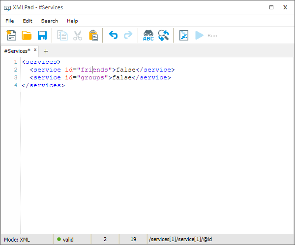

One of the most important productivity applications on any system is the ability to write text in various forms, from the humble notepad to WYSIWYG (what you see is what you get) word processors, and code and markup editors with support for syntactic and semantic validation. Several such applications were made using XIOS/3 with various levels of sophistication, but let us look at “XMLPad”, a simple XML editor. At its core it is a presentation and input component that is bound to a document in memory. Every change in the document is automatically reflected on the screen for the user, but any input the user makes goes through the XIOS/3 transaction engine. These changes are expressed as a series of modifications at points in the document pointed out by XPath expressions. This allows anyone else interested in this document to get notified with only the delta of what has changed. If the document is shared with another user or device only these changes need to be transmitted.
There are many hidden details and edge cases on regulating change frequencies and coalescing change sets, but one of the more interesting for general use is how to handle syntactically invalid XML markup that inevitably happens when a user is typing. To solve that the offending section of the document can be wrapped in a special “not valid” namespace and encoded with entities or wrapped in a CDATA block, and can then be handled as any other XPath-indicated XML change set.
Besides the advanced applications like having servers or other clients apply these transactions elsewhere for collaborative applications or auditing change logs, they also can serve an immediate use for the application developer. A transaction log on a document can serve as a undo buffer if the transactions are applied in reverse. If then those transactions are moved to a different log they serve as a redo buffer.
Figure 2. The XMLPad application.
|  |